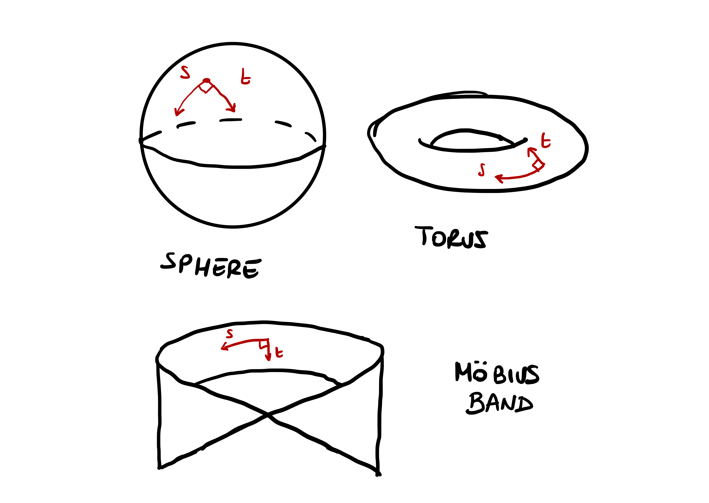

4 Surfaces
Curves are 1D objects in \(\mathbb{R}^3\), parametrized via functions \({\pmb{\gamma}}\colon (a,b) \to \mathbb{R}^3\). There is only one available direction in which to move on a curve:
- \(t \mapsto {\pmb{\gamma}}(t)\) moves forward on the curve
- \(t \mapsto {\pmb{\gamma}}(-t)\) moves backward on the curve

Surfaces are 2D objects in \(\mathbb{R}^3\). There are two directions in which one can move on a surface.

Question 1
A curve \(\Gamma \subseteq \mathbb{R}^3\) can be described with one function \({\pmb{\gamma}}\colon (a,b) \to \Gamma\). The idea is that \(\Gamma\) looks locally like \(\mathbb{R}\).
A surface \(\mathcal{S}\) cannot be described, in general, with just one function \({\pmb{\sigma}}\colon U \to \mathcal{S}\), with \(U \subseteq \mathbb{R}^2\) open set. The idea is that, to describe \(\mathcal{S}\), one needs to piece together many local charts \({\pmb{\sigma}}_i \colon U_i \to \mathcal{S}\) with \(U_i \subseteq \mathbb{R}^2\) open. Such charts have to cover the whole surface \(\mathcal{S}\), e.g. \[ \mathcal{S}= \bigcup_{i} {\pmb{\sigma}}_i (U_i) \,. \]

4.1 Preliminaries
Before proceeding with the formal definition of surface, we need to establish some basic notation and terminology regarding the topology of \(\mathbb{R}^n\) and smooth maps from \(\mathbb{R}^n\) into \(\mathbb{R}^m\).
4.1.1 Topology of \(\mathbb{R}^n\)
The Euclidean norm on \(\mathbb{R}^n\) is denoted by \[ \| \mathbf{x}\| := \sqrt{ \sum_{i=1}^n x_i^2 }\,, \quad \mathbf{x}= (x_1 , \ldots, x_n) \in \mathbb{R}^n \,. \] The Euclidean norm induces the distance \[ d(\mathbf{x},\mathbf{y}) := \| \mathbf{x}- \mathbf{y}\| = \sqrt{ \sum_{i=1}^n (x_i - y_i)^2 } \,. \]
Definition 2: Euclidean Topology
Definition 3: Open Sets
Definition 4: Closed Sets
Example 5
The \(n\)-dimensional unit sphere \[ \mathbb{S}^n = \{ \mathbf{x}\in \mathbb{R}^{n+1} \, \colon \,\| x \| = 1 \} \] is not open in \(\mathbb{R}^{n+1}\), since for any \(\mathbf{x}\in \mathbb{S}^n\) we have \[ B_{\varepsilon} (\mathbf{x}) \not\subseteq \mathbb{S}^{n} \,. \]
The \(n\)-dimensional unit cube \[ C := \{ \mathbf{x}\in \mathbb{R}^n \, \colon \,|x_1| + \ldots + |x_n| <1 \} \] is open in \(\mathbb{R}^n\), since one can always find \(\varepsilon>0\) small enough so that \[ B_{\varepsilon} (\mathbf{x}) \not\subseteq C \,. \]
The set \[ V := \{ \mathbf{x}\in \mathbb{R}^n \, \colon \,|x_1| + \ldots + |x_n| \geq 1 \} \] is closed, since \(V^c = C\) is the unit cube, which is open.
Definition 6: Subspace Topology
4.1.2 Smooth functions
We recall some basic facts about smooth functions from \(\mathbb{R}^n\) into \(\mathbb{R}^m\).
Definition 7: Continuous Function
Remark: Let \(f \colon U \subseteq \mathbb{R}^n \to V \subseteq \mathbb{R}^m\), with \(U,V\) open. We have that \(f\) is continuous if and only if \(f^{-1}(A)\) is open in \(U\), for all \(A\) open in \(V\).
Homeomorphism: Let \(f \colon U \subseteq \mathbb{R}^n \to V \subseteq \mathbb{R}^m\) with \(U,V\) open. We say that \(f\) is a homeomorphism if \(f\) is continuous and there exists inverse \(f^{-1} \colon V \to U\) continuous.
Differentiable Function: Let \(f \colon U \subseteq \mathbb{R}^n \to \mathbb{R}^m\) with \(U\) open. We say that \(f\) is differentiable at \(\mathbf{x}\in U\) if there exists a linear map \(df_{\mathbf{x}} \colon \mathbb{R}^n \to \mathbb{R}^m\) such that \[ \lim_{\varepsilon\to 0} \ \frac{ f(\mathbf{x}+ \varepsilon\pmb{h} ) - f(\mathbf{x}) - \varepsilon\, df_{\mathbf{x}}(\pmb{h}) }{ \varepsilon} = 0 \,, \] for all \(\pmb{h} \in \mathbb{R}^n\). The map \(df_{\mathbf{x}}\) is called the differential of \(f\) at \(\mathbf{x}\).
We denote by \(\{\mathbf{e}_i\}\) the standard basis of \(\mathbb{R}^n\).
Partial Derivative: Let \(f \colon U \subseteq \mathbb{R}^n \to \mathbb{R}^m\) with \(U\) open be differentiable. The partial derivative of \(f\) at \(\mathbf{x}\in U\) in direction \(\mathbf{e}_i\) is given by \[ \frac{\partial f}{\partial x_i} := \lim_{\varepsilon\to 0} \frac{ f( \mathbf{x}+ \varepsilon\mathbf{e}_i ) - f(\mathbf{x}) }{ \varepsilon} \,. \]
Jacobian Matrix: The linear map \(df_{\mathbf{x}} \colon \mathbb{R}^n \to \mathbb{R}^m\) can be represented in matrix form by
Multi-index Notation: For a multi-index \[ \alpha := (\alpha_1, \ldots , \alpha_n) \in \mathbb{N}^n \] we denote by \[ |\alpha|:= \sum_{i=1}^n |\alpha_i| \] the length of the multi-index.
Smooth Function: Let \(f \colon U \subseteq \mathbb{R}^n \to \mathbb{R}^m\) with \(U\) open. We say that \(f\) is smooth if the derivatives \[ \frac{\partial^\alpha f}{d\mathbf{x}^\alpha} := \frac{\partial^{\alpha_1}}{ \partial x_1^{\alpha_1}} \cdots \frac{\partial^{\alpha_n}}{ \partial x_n^{\alpha_n}} \, f \] exist for each multi-index \(\alpha \in \mathbb{N}^n\). Note that in this case all the derivatives of \(f\) are automatically continuous.
Example
4.2 Smooth surfaces
Definition 8
A set \(\mathcal{S}\subset \mathbb{R}^3\) is a surface if for every point \(\mathbf{p}\in \mathcal{S}\) there exist open sets \(U \subset \mathbb{R}^2\), \(V \subset \mathbb{R}^3\) such that
- \(\mathbf{p}\in V\),
- \(U\) is diffeomorphic to \(V \cap \mathcal{S}\).
Further:
- A diffeomorphism of \(U\) into \(V \cap \mathcal{S}\), denoted by \[ {\pmb{\sigma}}\colon U \to V \cap \mathcal{S}\, \] is called a surface chart.
- For each \(i \in I\) suppose to have a surface chart \[ {\pmb{\sigma}}_i \colon U_i \to V_i \cap \mathcal{S}\,. \] We say that the family \(\{ {\pmb{\sigma}}_i\}_{i \in I}\) is an atlas of \(\mathcal{S}\) if \[ \bigcup_{i \in I} (V_i \cap \mathcal{S}) = \mathcal{S}\,. \]
Note that a surface chart \({\pmb{\sigma}}\) is a map from \(\mathbb{R}^2\) into \(\mathbb{R}^3\). Points in \(U\) will be denoted by the pair \((u,v)\), while points on \(\mathcal{S}\) by \(\mathbf{p}\) and points in \(\mathbb{R}^3\) by \(\mathbf{x}\).
Definition 9
Definition 10
Definition 11
Denote by \[ \mathbb{S}^2 = \{ \mathbf{x}\in \mathbb{R}^3 \, \colon \, \left\| \mathbf{x} \right\| = 1 \} \] the unit sphere in \(\mathbb{R}^3\).